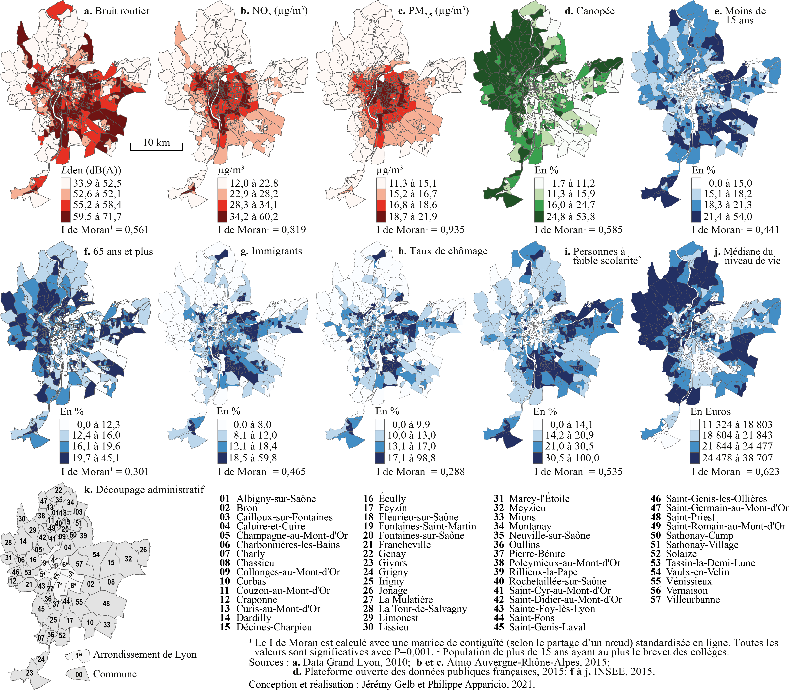
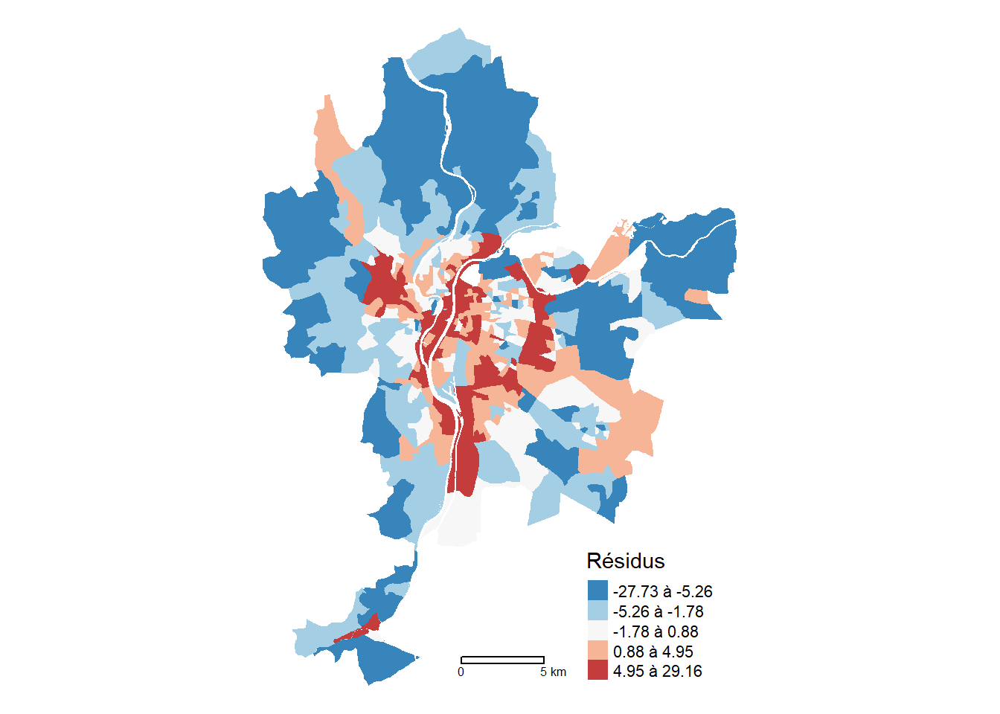
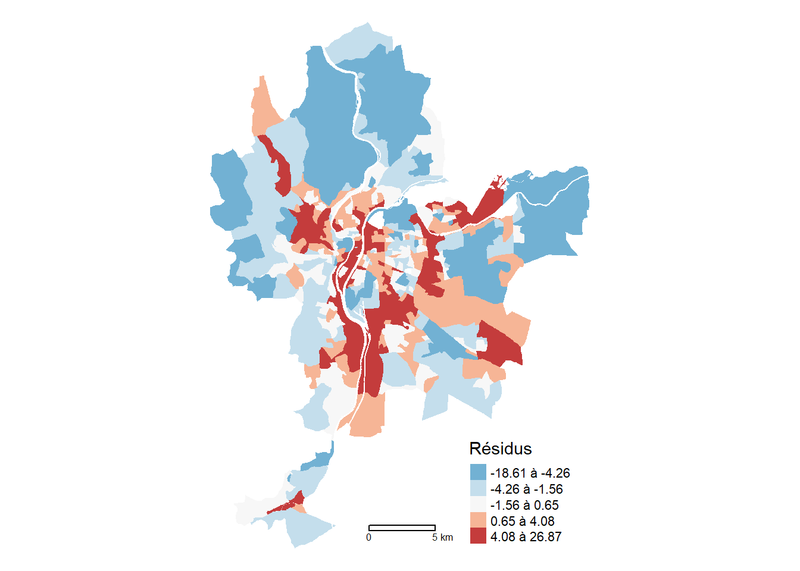
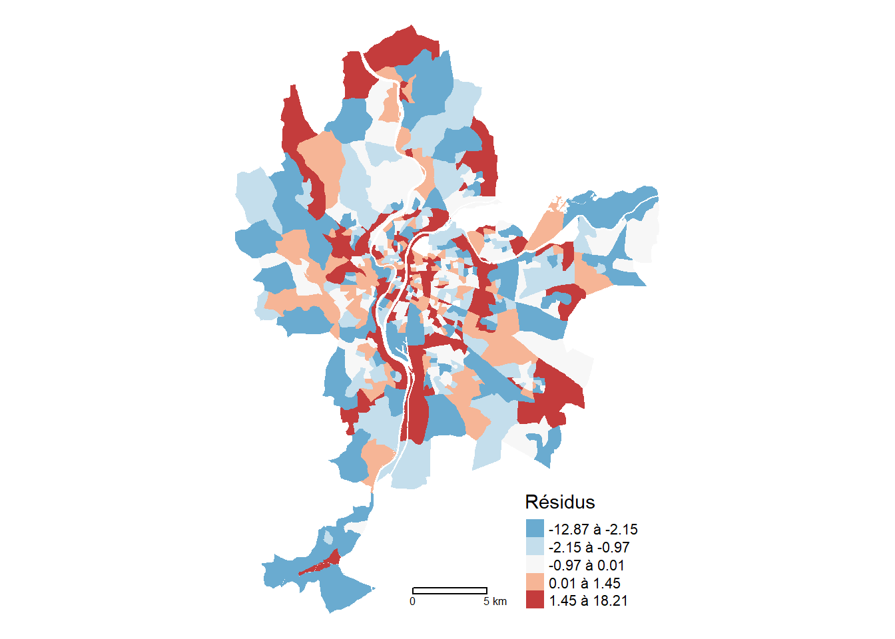
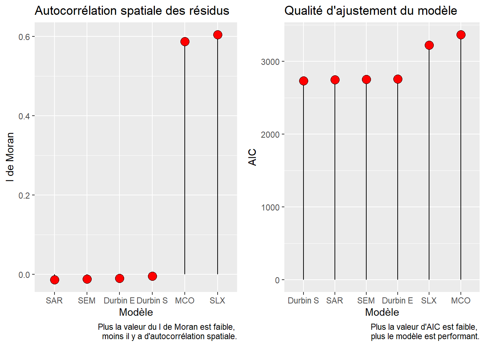
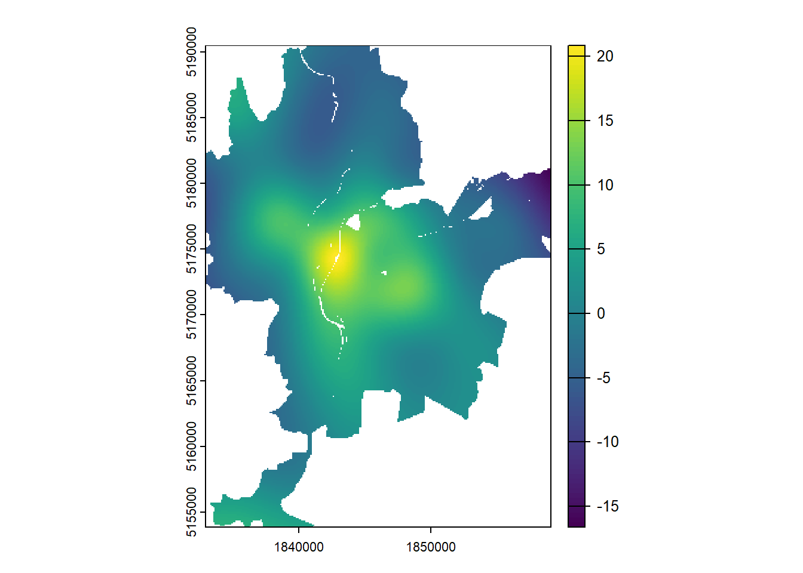
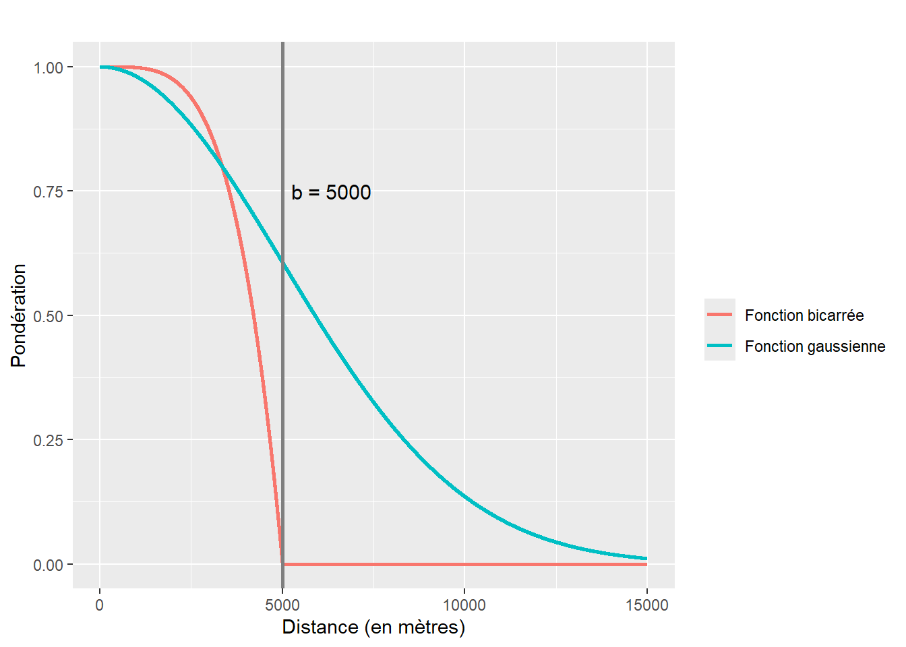
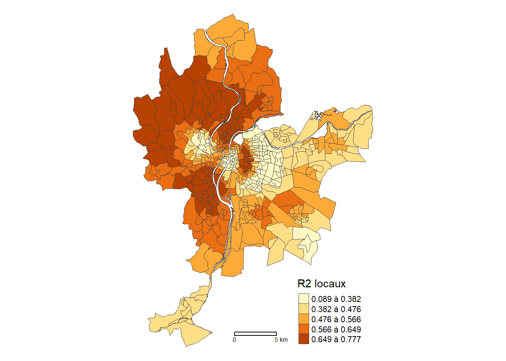
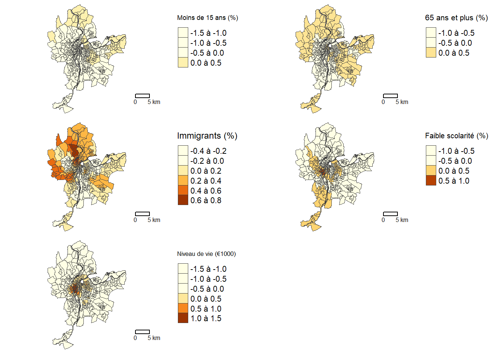
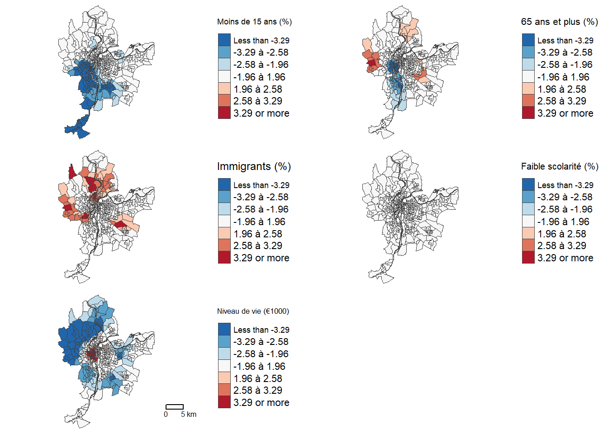

| Nom | Intitulé | Type | Moy. | E.-T. | Min. | Max. | |
|---|---|---|---|---|---|---|---|
| Lden | Lden | Bruit routier (Lden dB(A)) | EN | 55,6 | 4,9 | 33,9 | 71,7 |
| NO2 | NO2 | Dioxyde d’azote (ug/m3) | EN | 28,7 | 7,9 | 12,0 | 60,2 |
| PM25 | PM25 | Particules fines (PM\(_{2,5}\)) | EN | 16,8 | 2,1 | 11,3 | 21,9 |
| VegHautPrt | VegHautPrt | Canopée (%) | EN | 18,7 | 10,1 | 1,7 | 53,8 |
| Pct0_14 | Pct0_14 | Moins de 15 ans (%) | SE | 18,5 | 5,7 | 0,0 | 54,0 |
| Pct_65 | Pct_65 | 65 ans et plus (%) | SE | 16,2 | 5,9 | 0,0 | 45,1 |
| Pct_Img | Pct_Img | Immigrants (%) | SE | 14,5 | 9,1 | 0,0 | 59,8 |
| TxChom1564 | TxChom1564 | Taux de chômage | SE | 14,8 | 8,1 | 0,0 | 98,8 |
| Pct_brevet | Pct_brevet | Personnes à faible scolarité (%) | SE | 23,5 | 12,6 | 0,0 | 100,0 |
| NivVieMed | NivVieMed | Médiane du niveau de vie (milliers d’euros) | SE | 21,8 | 4,9 | 11,3 | 38,7 |
7 Introduction aux modèles de régression spatiale
Depuis une trentaine d’années, économètres, épidémiologistes et géographes développent et utilisent abondamment des méthodes de régression intégrant l’espace : modèles économétriques spatiaux, modèles géographiquement pondérés, analyses multiniveaux, etc. L’objectif de ce chapitre est de donner un aperçu de ces méthodes. Nous y décrivons principalement les différents modèles économétriques spatiaux, les modèles généralisés additifs avec une spline bivariée sur les coordonnées géographiques et les modèles géographiquement pondérés.
Liste des packages utilisés dans ce chapitre
- Pour importer et manipuler des fichiers géographiques :
-
sfpour importer et manipuler des données vectorielles. -
rasteretterrapour manipuler des données matricielles.
-
- Pour construire des cartes et des graphiques :
-
tmapest certainement le meilleur package pour la cartographie. -
ggplot2pour construire des graphiques.
-
- Pour construire des modèles spatiaux :
-
spdeppour construire des matrices de pondération spatiales et calculer le I de Moran. -
spatialregpour construire des modèles économétriques spatiaux. -
mgcvpour construire des modèles généralisés additifs avec une spline sur les coordonnées géographiques. -
spgwrpour construire des régressions géographiquement pondérées.
-
Pour décrire les différents modèles, nous proposons d’utiliser le jeu de données spatiales LyonIris du package geocmeans. Ce jeu de données spatiales pour l’agglomération lyonnaise (France) comprend dix variables, dont quatre environnementales (EN) et six socioéconomiques (SE), pour les îlots regroupés pour l’information statistique (IRIS) de l’agglomération lyonnaise (tableau 7.1 et figure 7.1).

7.1 Modèles économétriques spatiaux
Régression linéaire multiple et modèles économétriques spatiaux
Dans cette section, nous décrivons uniquement les modèles économétriques spatiaux dont la variable dépendante est continue. Sommairement, ces modèles sont des extensions de la régression linéaire multiple dans laquelle est intégrée l’autocorrélation spatiale. Avant de lire cette section, il faut donc bien maîtriser la régression linéaire multiple. Si ce n’est pas le cas, nous vous invitons vivement à lire le chapitre suivant (Apparicio et Gelb 2022).
Ces deux dernières décennies, plusieurs ouvrages traitant des modèles économétriques spatiaux ont été publiés, surtout en anglais (LeSage et Pace 2008; Anselin et Rey 2014; Bivand et al. 2008). Ils méritent grandement d’être consultés, tout comme l’excellent livre en français de Jean Dubé et Diègo Legros (2014).
Pourquoi recourir à des modèles économétriques spatiaux?
Dans un modèle, les résidus (\(\epsilon\)) sont la différence entre les valeurs observées (\(y_i\)) et les valeurs prédites par le modèle (\(\widehat{y_i}\)). Une des hypothèses de la régression linéaire multiple est que les observations doivent être indépendantes les unes des autres (indépendance du terme d’erreur). Le non-respect de cette hypothèse produit des résultats biaisés, notamment pour les coefficients de régression.
Lorsque les observations sont des entités spatiales (polygones, points par exemple), si les résidus du modèle sont autocorrélés spatialement, il y a un problème de dépendance spatiale du modèle. Autrement dit, les observations ne sont pas spatialement indépendantes les unes des autres. Pour vérifier la dépendance spatiale d’un modèle, il suffit de calculer le I de Moran sur les résidus du modèle, comme décrit au chapitre 2 (section 2.3).
Autrement dit, un modèle de régression construit avec des données spatiales ne devrait pas avoir des résidus spatialement autocorrélés. Or, les modèles économétriques spatiaux permettent justement d’intégrer l’autocorrélation spatiale de différentes manières afin de s’assurer que l’hypothèse de l’indépendance du terme d’erreur est respectée.
7.1.1 Bref retour sur la régression linéaire multiple
À titre de rappel, la régression linéaire multiple permet de prédire et d’expliquer une variable dépendante (\(Y\)) en fonction de plusieurs variables indépendantes (\(X\)). L’équation de régression s’écrit alors :
\[ y_i = \beta_{0} + \beta_{1}x_{1i} + \beta_{2}x_{2i} +\ldots+ \beta_{k}x_{ki} + \epsilon_{i} \tag{7.1}\]
avec :
- \(y_i\), la valeur de la variable dépendante Y pour l’observation i.
- \(\beta_{0}\), la constante, soit la valeur prédite pour Y quand toutes les variables indépendantes sont égales à 0.
- \(k\) le nombre de variables indépendantes.
- \(\beta_{1}\) à \(\beta_{k}\), les coefficients de régression pour les variables indépendantes de 1 à k (\(X_{1}\) à \(X_{k}\)).
- \(\epsilon_{i}\), le résidu pour l’observation de i, soit la partie de la valeur de \(y_i\) qui n’est pas expliquée par le modèle de régression.
Il existe plusieurs écritures simplifiées de cette équation. Dans le cadre de ce chapitre, nous utilisons la forme matricielle suivante :
\[ y = X\beta + \epsilon \tag{7.2}\]
avec :
- \(y\), un vecteur de dimension \(n \times 1\) pour la variable dépendante, soit une colonne avec n observations.
- \(X\), une matrice de dimension \(n \times (k + 1)\) pour les k variables indépendantes, incluant une autre colonne (avec la valeur de 1 pour les n observations) pour la constante, d’où \(k + 1\).
- \(\beta\), un vecteur de dimension \(k + 1\), soit les coefficients de régression pour les k variables et la constante.
- \(\epsilon\), un vecteur de dimension \(n \times 1\) pour les résidus.
Construction du modèle MCO dans R
Avec la fonction lm(), il est facile de construire un modèle de régression linéaire multiple basé sur la méthode des moindres carrés ordinaires (MCO). Dans le code ci-dessous, la formule de l’équation du modèle est donc NO2 ~ Pct0_14+Pct_65+Pct_Img+Pct_brevet+NivVieMed. Notez que la variable dépendante et les variables indépendantes sont séparées avec un tilde (~). Quant à la fonction summary(NomDuModèle), elle affiche les résultats du modèle.
Warning: le package 'spdep' a été compilé avec la version R 4.4.1Warning: le package 'spData' a été compilé avec la version R 4.4.1## Construction du modèle
Modele.MCO <- lm(NO2 ~ Pct0_14+Pct_65+Pct_Img+Pct_brevet+NivVieMed,
data = LyonIris)
## Résultats du modèle
summary(Modele.MCO)
Call:
lm(formula = NO2 ~ Pct0_14 + Pct_65 + Pct_Img + Pct_brevet +
NivVieMed, data = LyonIris)
Residuals:
Min 1Q Median 3Q Max
-27.733 -4.457 -0.499 3.507 29.160
Coefficients:
Estimate Std. Error t value Pr(>|t|)
(Intercept) 49.43296 2.99550 16.502 < 2e-16 ***
Pct0_14 -0.53352 0.06305 -8.461 2.94e-16 ***
Pct_65 -0.15047 0.05627 -2.674 0.00774 **
Pct_Img 0.28287 0.05113 5.532 5.12e-08 ***
Pct_brevet -0.24004 0.03721 -6.451 2.63e-10 ***
NivVieMed -0.31625 0.10180 -3.107 0.00200 **
---
Signif. codes: 0 '***' 0.001 '**' 0.01 '*' 0.05 '.' 0.1 ' ' 1
Residual standard error: 6.685 on 500 degrees of freedom
Multiple R-squared: 0.2832, Adjusted R-squared: 0.276
F-statistic: 39.5 on 5 and 500 DF, p-value: < 2.2e-16Dépendance spatiale du modèle MCO?
Pour vérifier si ce modèle linéaire multiple a un problème de dépendance spatiale, nous calculons le I de Moran sur ses résidus avec la fonction lm.morantest, puis nous les cartographions.
## Matrice de contiguïté selon le partage d'un segment (Rook)
Rook <- poly2nb(LyonIris, queen=FALSE)
W.Rook <- nb2listw(Rook, zero.policy=TRUE, style = "W")
# Autocorrélation spatiale globale des résidus
lm.morantest(Modele.MCO, W.Rook, alternative="two.sided")
Global Moran I for regression residuals
data:
model: lm(formula = NO2 ~ Pct0_14 + Pct_65 + Pct_Img + Pct_brevet +
NivVieMed, data = LyonIris)
weights: W.Rook
Moran I statistic standard deviate = 21.266, p-value < 2.2e-16
alternative hypothesis: two.sided
sample estimates:
Observed Moran I Expectation Variance
0.587312061 -0.005375800 0.000776745 Avec une valeur du I de Moran de 0,587 (p < 0,001), les résidus sont fortement autocorrélés spatialement, traduisant ainsi un problème de dépendance spatiale du modèle MCO et la nécessité de recourir à des modèles économétriques spatiaux. La cartographie des résidus à la figure 7.2 corrobore ce résultat.
library(tmap)
## Ajout de la colonne dans LyonIris avec les valeurs des résidus
LyonIris$ModeleMCO.Residus <- residuals(Modele.MCO)
## Cartographie
tmap_mode("plot")
tm_shape(LyonIris)+
tm_fill(col="ModeleMCO.Residus", n = 5, style = "quantile",
legend.format = list(text.separator = "à"),
palette = "-RdBu", title = "Résidus") +
tm_layout(frame=FALSE) +
tm_scale_bar(breaks = c(0,5))
7.1.2 Les différents modèles spatiaux autorégressifs
Selon Jean Dubé et Diègo Legros, « cinq raisons peuvent motiver le choix d’un modèle autorégressif : la présence d’externalités, les effets d’entraînement, l’omission de variables importantes, la présence d’hétérogénéité spatiale des comportements, les effets mixtes » (2014, 120). Les effets mixtes peuvent être la combinaison d’externalités avec des effets d’entraînement ou encore d’externalités avec l’omission d’une ou de plusieurs variables importantes spatialement structurées.
7.1.2.1 Modèle SLX : autocorrélation spatiale sur les variables indépendantes
Dans un modèle SLX, l’autocorrélation spatiale est intégrée au niveau des variables indépendantes. Autrement dit, les variables indépendantes spatialement décalées (\(WX\)) sont introduites aussi dans le modèle. Par conséquent, la valeur de chaque unité spatiale du modèle est ainsi expliquée à la fois par ses propres caractéristiques et celles dans le voisinage ou à proximité en fonction de la matrice de pondération spatiale (\(W\)).
Rappel sur les variables spatialement décalées
Dans le chapitre 2 sur l’autocorrélation spatiale, nous avons vu comment calculer une variable spatialement décalée avec une matrice de pondération spatiale (figure 2.29). À titre de rappel, lorsque cette dernière est standardisée en ligne, elle correspond à la valeur moyenne dans le voisinage.
L’idée est alors d’introduire des externalités puisque les caractéristiques des entités spatiales proches ou voisines peuvent avoir un effet sur la variable dépendante (Dubé et Legros 2014). L’équation du modèle SLX, qui est estimée selon la méthode des moindres carrés ordinaires (comme la régression linéaire multiple), s’écrit alors :
\[ y = X\beta + WX\theta + \epsilon \tag{7.3}\]
avec :
- \(y\), la variable dépendante.
- \(X\), les variables indépendantes.
- \(\beta\), les coefficients des variables indépendantes.
- \(W\), la matrice de pondération spatiale.
- \(WX\), les variables indépendantes spatiales décalées.
- \(\theta\), les coefficients des variables indépendantes spatiales décalées.
- \(\epsilon\), les résidus.
Construction du modèle SLX dans R
Le modèle SLX est construit avec la fonction lmSLX du package spatialreg (Bivand, Millo et Piras 2021). Remarquez, dans le code ci-dessous, le paramètre listw=W.Rook qui est utilisé pour spécifier la matrice de pondération spatiale.
library(spatialreg)
## Construction du modèle
Modele.SLX <- lmSLX(NO2 ~ Pct0_14+Pct_65+Pct_Img+Pct_brevet+NivVieMed,
listw=W.Rook, # matrice de pondération spatiale
data = LyonIris) # dataframe
## Résultats du modèle
summary(Modele.SLX)
Call:
lm(formula = formula(paste("y ~ ", paste(colnames(x)[-1], collapse = "+"))),
data = as.data.frame(x), weights = weights)
Coefficients:
Estimate Std. Error t value Pr(>|t|)
(Intercept) 5.068e+01 4.188e+00 1.210e+01 1.040e-29
Pct0_14 -2.040e-01 6.268e-02 -3.255e+00 1.211e-03
Pct_65 -3.771e-02 5.361e-02 -7.033e-01 4.822e-01
Pct_Img 1.041e-01 4.849e-02 2.146e+00 3.235e-02
Pct_brevet -7.363e-02 3.550e-02 -2.074e+00 3.857e-02
NivVieMed -1.844e-01 1.106e-01 -1.667e+00 9.617e-02
lag.Pct0_14 -7.759e-01 1.030e-01 -7.537e+00 2.315e-13
lag.Pct_65 -6.454e-02 9.115e-02 -7.081e-01 4.792e-01
lag.Pct_Img 6.465e-01 8.593e-02 7.524e+00 2.526e-13
lag.Pct_brevet -3.013e-01 6.157e-02 -4.893e+00 1.344e-06
lag.NivVieMed -1.805e-02 1.750e-01 -1.031e-01 9.179e-01Effets directs, indirects et totaux
La formulation d’un modèle SLX implique deux types d’effets pour les variables indépendantes (\(X\)) :
les effets directs, soit ceux des caractéristiques des entités spatiales. Ils correspondent aux coefficients \(\beta\) des variables indépendantes (\(X\)). Autrement dit, pour une observation \(i\), à chaque augmentation d’une unité d’une caractéristique \(X\), la valeur de \(y_i\) va varier (augmenter ou diminuer) en fonction du coefficient \(\beta\).
les effets indirects, soit ceux des caractéristiques des entités spatiales voisines ou proches définies selon la matrice de pondération spatiale. Ils correspondent aux coefficients \(\theta\) des variables indépendantes spatialement décalées (\(WX\)). Autrement dit, les valeurs de \(WX\) des entités spatiales proches ou voisines \(j\) de \(i\) vont aussi être amenées à varier, impactant alors les valeurs \(y_j\) selon les coefficients \(\theta\).
Prenons l’exemple d’un modèle visant à prédire le prix de vente des maisons dans une ville en fonction de leurs caractéristiques des maisons, dont la superficie du jardin. Il est probable que plus la superficie du jardin de la maison \(i\) augmente, plus le prix de vente augmente également (effet direct, coefficient \(\beta\)). Cette augmentation de la taille du jardin aura aussi un impact sur le prix des maisons voisines puisque leur prix est dépendant de la taille des jardins des maisons voisines. Ainsi, chaque maison \(j\), voisine de \(i\) verra son prix augmenter à cause de l’augmentation de la taille du jardin de la maison \(i\) (effet indirect).
Pour capturer l’impact total sur le prix des maisons d’une augmentation de la superficie du jardin de la maison \(i\), il suffit de sommer son effet direct (augmentation du prix de la maison \(i\)) et son effet indirect (augmentation du prix des maisons \(j\)) pour obtenir son effet total.
Le code suivant permet de calculer ces effets directs et indirects.
## Effets directs, indirects et totaux (uniquement les coefficients)
impacts(Modele.SLX)Impact measures (SlX, glht):
Direct Indirect Total
Pct0_14 -0.20403803 -0.77590830 -0.9799463
Pct_65 -0.03770918 -0.06453809 -0.1022473
Pct_Img 0.10406359 0.64653923 0.7506028
Pct_brevet -0.07363272 -0.30128171 -0.3749144
NivVieMed -0.18440960 -0.01804718 -0.2024568## Effets directs, indirects et totaux (coefficients, valeurs de z et de p)
summary(impacts(Modele.SLX))Impact measures (SlX, glht, n-k):
Direct Indirect Total
Pct0_14 -0.20403803 -0.77590830 -0.9799463
Pct_65 -0.03770918 -0.06453809 -0.1022473
Pct_Img 0.10406359 0.64653923 0.7506028
Pct_brevet -0.07363272 -0.30128171 -0.3749144
NivVieMed -0.18440960 -0.01804718 -0.2024568
========================================================
Standard errors:
Direct Indirect Total
Pct0_14 0.06268202 0.10295210 0.10045332
Pct_65 0.05361420 0.09114695 0.08556272
Pct_Img 0.04849085 0.08593145 0.08060028
Pct_brevet 0.03549819 0.06157121 0.05975821
NivVieMed 0.11063207 0.17499339 0.14911021
========================================================
Z-values:
Direct Indirect Total
Pct0_14 -3.2551283 -7.5365951 -9.755241
Pct_65 -0.7033432 -0.7080664 -1.194998
Pct_Img 2.1460460 7.5238953 9.312658
Pct_brevet -2.0742665 -4.8932234 -6.273857
NivVieMed -1.6668729 -0.1031306 -1.357766
p-values:
Direct Indirect Total
Pct0_14 0.0011334 4.8184e-14 < 2.22e-16
Pct_65 0.4818419 0.47890 0.23209
Pct_Img 0.0318693 5.3069e-14 < 2.22e-16
Pct_brevet 0.0380546 9.9198e-07 3.5221e-10
NivVieMed 0.0955397 0.91786 0.17454 À la lecture des valeurs de p, nous constatons que seule la variable Pct0_14 a un impact direct et indirect significatif au seuil 0,01. L’augmentation d’un point de pourcentage de la population de moins de 15 ans est associé localement à une réduction de 0,20 de la concentration annuelle du dioxyde d’azote. Chez les entités voisines, cette réduction est de 0,78 et l’effet total est donc une réduction de 0,98.
Dépendance spatiale du modèle SLX?
Ce modèle a-t-il corrigé le problème de dépendance spatiale du modèle de régression linéaire classique? Avec une valeur du I de Moran de 0,605 (p < 0,001), les résidus sont toujours fortement autocorrélés spatialement (figure 7.3).
lm.morantest(Modele.SLX, W.Rook, alternative="two.sided")
Global Moran I for regression residuals
data:
model: lm(formula = formula(paste("y ~ ", paste(colnames(x)[-1],
collapse = "+"))), data = as.data.frame(x), weights = weights)
weights: W.Rook
Moran I statistic standard deviate = 21.951, p-value < 2.2e-16
alternative hypothesis: two.sided
sample estimates:
Observed Moran I Expectation Variance
0.6046602748 -0.0072844321 0.0007771643 LyonIris$SLX.Residus <- residuals(Modele.SLX)
tm_shape(LyonIris)+
tm_fill(col="SLX.Residus", n = 5, style = "quantile",
legend.format = list(text.separator = "à"),
palette = "-RdBu", title = "Résidus") +
tm_layout(frame=FALSE) +
tm_scale_bar(breaks = c(0,5))
7.1.2.2 Modèle SAR : autocorrélation spatiale sur la variable dépendante
Dans le modèle SAR (aussi appelé SAR-LAG), l’autocorrélation spatiale est intégrée au niveau de la variable dépendante (\(Wy\)), qui est ainsi spatialement décalée. L’idée générale est que la valeur de la variable dépendante pour une observation (\(y_i\)) peut être influencée par les valeurs de \(y\) des observations voisines et proches. L’exemple le plus classique est le prix de vente des maisons : il est influencé à la fois par les caractéristiques intrinsèques de la maison (\(X\), par exemple, la superficie habitable, le nombre de chambres à coucher, de salles de bains, etc.) et par le prix de vente des maisons voisines (\(Wy\)). Jean Dubé et Diègo Legros (2014) qualifient ce phénomène « d’effets d’entraînement ou d’effets de débordement (spillover effects) » (2014, 123). L’équation du modèle SAR s’écrit alors :
\[ y = Wy\rho + X\beta + \epsilon \tag{7.4}\]
avec :
- \(y\), la variable dépendante.
- \(W\), la matrice de pondération spatiale.
- \(Wy\), la variable dépendante spatialement décalée.
- \(\rho\) (prononcez rho), le coefficient de la variable dépendante spatialement décalée. Il varie de -1 à 1.
- \(X\), les variables indépendantes.
- \(\beta\), les coefficients des variables indépendantes.
- \(\epsilon\), les résidus.
Construction du modèle SAR dans R
Le modèle SAR est construit avec la fonction lagsarlm du package spatialreg.
## Construction du modèle
Modele.SAR <- lagsarlm(NO2 ~ Pct0_14+Pct_65+Pct_Img+Pct_brevet+NivVieMed,
listw=W.Rook, # matrice de pondération spatiale
data = LyonIris, # dataframe
type = 'lag') # Modèle lag par défaut
## Résultats du modèle
summary(Modele.SAR, Nagelkerke=TRUE)
Call:lagsarlm(formula = NO2 ~ Pct0_14 + Pct_65 + Pct_Img + Pct_brevet +
NivVieMed, data = LyonIris, listw = W.Rook, type = "lag")
Residuals:
Min 1Q Median 3Q Max
-12.86859 -1.88111 -0.49760 0.94464 18.21351
Type: lag
Coefficients: (asymptotic standard errors)
Estimate Std. Error z value Pr(>|z|)
(Intercept) 7.838906 1.646232 4.7617 1.919e-06
Pct0_14 -0.098708 0.030554 -3.2306 0.001235
Pct_65 -0.034543 0.026957 -1.2814 0.200044
Pct_Img 0.030241 0.024491 1.2348 0.216917
Pct_brevet -0.019234 0.017855 -1.0772 0.281384
NivVieMed -0.098413 0.048985 -2.0090 0.044534
Rho: 0.87939, LR test value: 620.31, p-value: < 2.22e-16
Asymptotic standard error: 0.01942
z-value: 45.283, p-value: < 2.22e-16
Wald statistic: 2050.5, p-value: < 2.22e-16
Log likelihood: -1366.157 for lag model
ML residual variance (sigma squared): 10.181, (sigma: 3.1908)
Nagelkerke pseudo-R-squared: 0.78962
Number of observations: 506
Number of parameters estimated: 8
AIC: 2748.3, (AIC for lm: 3366.6)
LM test for residual autocorrelation
test value: 0.6198, p-value: 0.43112Dans les résultats ci-dessus, la valeur de rho est de 0,88 (LR = 620, p < 0,001), traduisant un très fort effet d’entraînement. Autrement dit, lorsqu’en moyenne la concentration de dioxyde d’azote augmente dans les IRIS voisines (\(Wy\)), elle augmente aussi fortement chaque IRIS (\(y\)).
Effets directs, indirects et totaux
Tout comme le modèle SLX vu précédemment, la formulation du modèle SAR-LAG implique des effets particuliers. Reprenons l’exemple d’un modèle prédisant le prix de vente des maisons avec cette fois-ci un modèle de type SAR-LAG :
- L’augmentation de la superficie du jardin de la maison \(i\) va faire augmenter le prix de la maison \(i\) (\(y_i\)).
- Cette augmentation de prix de la maison \(i\) aura un impact sur les voisins de \(i\), soit les maisons \(j\), car leur prix dépend du prix de la maison \(i\) au travers du terme \(Wy\rho\) du modèle. Par exemple, si \(\rho\) vaut 0,8, alors 80% de l’augmentation du prix de \(i\) va se répercuter sur le prix des maisons \(j\).
- De même, les voisines des maisons \(j\), les maisons \(k\) vont aussi être impactées par le changement de prix des maisons \(j\) et ainsi de suite de voisins en voisins.
- Au final, la maison \(i\) verra son prix augmenter encore plus, car le prix de ses voisines aura augmenté par effet de rétroaction.
Ce processus de propagation est appelé l’effet d’entraînement ou de débordement (spillover) en économétrie.
L’effet original de l’augmentation de la taille du jardin sur la maison \(i\), combiné à l’augmentation par rétroaction, est appelé l’effet direct. L’effet cumulé de l’augmentation de la taille du jardin sur toutes les autres maisons (\(\neq i\)) est appelé l’effet indirect. La somme des effets indirects et des directs est appelée effets totaux.
À nouveau, il est possible d’utiliser la fonction impacts pour calculer ces effets directs et indirects.
## Effets directs, indirects et totaux (uniquement les coefficients)
impacts(Modele.SAR, listw = W.Rook, R = 999)Impact measures (lag, exact):
Direct Indirect Total
Pct0_14 -0.13878038 -0.6796248 -0.8184052
Pct_65 -0.04856624 -0.2378349 -0.2864012
Pct_Img 0.04251743 0.2082131 0.2507306
Pct_brevet -0.02704205 -0.1324283 -0.1594703
NivVieMed -0.13836534 -0.6775923 -0.8159576## Effets directs, indirects et totaux (coefficients, valeurs de z et de p)
summary(impacts(Modele.SAR, listw = W.Rook, R = 999), zstats = TRUE, short = TRUE)Impact measures (lag, exact):
Direct Indirect Total
Pct0_14 -0.13878038 -0.6796248 -0.8184052
Pct_65 -0.04856624 -0.2378349 -0.2864012
Pct_Img 0.04251743 0.2082131 0.2507306
Pct_brevet -0.02704205 -0.1324283 -0.1594703
NivVieMed -0.13836534 -0.6775923 -0.8159576
========================================================
Simulation results ( variance matrix):
========================================================
Simulated standard errors
Direct Indirect Total
Pct0_14 0.04326929 0.2417407 0.2805365
Pct_65 0.03830263 0.2006507 0.2378901
Pct_Img 0.03475601 0.1811266 0.2149674
Pct_brevet 0.02459614 0.1286788 0.1527126
NivVieMed 0.06890889 0.3708196 0.4362971
Simulated z-values:
Direct Indirect Total
Pct0_14 -3.246311 -2.913823 -3.011569
Pct_65 -1.270341 -1.210825 -1.225820
Pct_Img 1.208218 1.156290 1.169608
Pct_brevet -1.058156 -1.007896 -1.019702
NivVieMed -2.029437 -1.895991 -1.931979
Simulated p-values:
Direct Indirect Total
Pct0_14 0.0011691 0.0035703 0.002599
Pct_65 0.2039632 0.2259623 0.220266
Pct_Img 0.2269633 0.2475626 0.242159
Pct_brevet 0.2899845 0.3135046 0.307870
NivVieMed 0.0424138 0.0579612 0.053362L’interprétation des effets directs se rapproche de celle des coefficients classiques. Ainsi, selon ce modèle, l’augmentation du niveau de vie médian de 1000 € dans un IRIS est associée avec une diminution moyenne de la concentration de dioxyde d’azote de 0,14 dans cet IRIS. L’effet total est de -0.82, indiquant qu’en moyenne, l’augmentation de 1000 € du niveau de vie médian dans un IRIS est associée avec une diminution moyenne de 0,82 de la concentration de dioxyde d’azote dans l’ensemble des IRIS. Au final, l’effet indirect est simplement la différence entre l’effet total et l’effet direct. Nous pouvons constater ici que les effets indirects sont plus importants que les effets directs.
Dépendance spatiale du modèle SAR?
Ce modèle a-t-il corrigé le problème de dépendance spatiale du modèle de régression linéaire classique? Avec une valeur du I de Moran de -0,014 (p = 0,654), les résidus ne sont plus spatialement autocorrélés (figure 7.4).
Monte-Carlo simulation of Moran I
data: resid(Modele.SAR)
weights: W.Rook
number of simulations + 1: 1000
statistic = -0.014281, observed rank = 335, p-value = 0.665
alternative hypothesis: greater## Cartographie des résidus
LyonIris$SAR.Residus <- resid(Modele.SAR)
tm_shape(LyonIris)+
tm_fill(col="SAR.Residus", n = 5, style = "quantile",
legend.format = list(text.separator = "à"),
palette = "-RdBu", title = "Résidus") +
tm_layout(frame=FALSE) +
tm_scale_bar(breaks = c(0,5))
7.1.2.3 Modèle SEM : autocorrélation spatiale sur le terme d’erreur
Dans le modèle SEM (Spatial Error Model, appelé aussi SAR-ERROR), l’intégration de l’autocorrélation spatiale est réalisée sur le terme d’erreur, ce qui pourrait se justifier par l’omission d’une variable dépendante spatialement structurée (Dubé et Legros 2014, 126). L’équation du modèle SEM s’écrit :
\[ y = X\beta + u \textrm{, } u = \lambda Wu + \epsilon \tag{7.5}\]
avec :
- \(y\), la variable dépendante.
- \(W\), la matrice de pondération spatiale.
- \(\lambda\) (prononcez lambda), le coefficient sur le terme d’erreur spatialement décalé. Il varie de -1 à 1.
- \(X\), les variables indépendantes.
- \(\beta\), les coefficients des variables indépendantes.
- \(\epsilon\), les résidus.
Construction du modèle SAR dans R
Le modèle SEM est construit avec la fonction errorsarlm du package spatialreg.
## Construction du modèle
Modele.SEM <- errorsarlm(NO2 ~ Pct0_14+Pct_65+Pct_Img+Pct_brevet+NivVieMed,
listw=W.Rook, # matrice de pondération spatiale
data = LyonIris) # dataframe
## Résultats du modèle
summary(Modele.SEM, Nagelkerke=TRUE)
Call:errorsarlm(formula = NO2 ~ Pct0_14 + Pct_65 + Pct_Img + Pct_brevet +
NivVieMed, data = LyonIris, listw = W.Rook)
Residuals:
Min 1Q Median 3Q Max
-12.86150 -1.83161 -0.44106 0.91029 17.94924
Type: error
Coefficients: (asymptotic standard errors)
Estimate Std. Error z value Pr(>|z|)
(Intercept) 30.544576 2.358173 12.9526 < 2e-16
Pct0_14 -0.035019 0.033393 -1.0487 0.29431
Pct_65 -0.026039 0.028970 -0.8988 0.36874
Pct_Img -0.016770 0.026176 -0.6407 0.52175
Pct_brevet 0.023708 0.019074 1.2430 0.21388
NivVieMed -0.146309 0.060273 -2.4274 0.01521
Lambda: 0.91138, LR test value: 613.15, p-value: < 2.22e-16
Asymptotic standard error: 0.01651
z-value: 55.201, p-value: < 2.22e-16
Wald statistic: 3047.2, p-value: < 2.22e-16
Log likelihood: -1369.737 for error model
ML residual variance (sigma squared): 9.9971, (sigma: 3.1618)
Nagelkerke pseudo-R-squared: 0.78662
Number of observations: 506
Number of parameters estimated: 8
AIC: 2755.5, (AIC for lm: 3366.6)Dans les résultats ci-dessus, la valeur de lambda est de 0,91 (LR = 613, p < 0,001), traduisant une très forte autocorrélation spatiale sur le terme d’erreur.
Dépendance spatiale du modèle SEM?
Ce modèle a-t-il corrigé le problème de dépendance spatiale du modèle de régression linéaire classique? Avec une valeur du I de Moran de -0,013 (p = 0,614), les résidus ne sont plus spatialement autocorrélés.
7.1.2.4 Modèle SDM : autocorrélation spatiale sur la variable dépendante et les variables indépendantes
Le modèle SDM (Spatial Durbin Model) est un modèle mixte qui intègre à la fois l’autocorrélation spatiale sur la variable dépendante (\(Wy\), effets d’entraînement ou de débordement) et sur les variables indépendantes (\(WX\), externalités). Il s’écrit alors :
\[ y = Wy\rho + X\beta + WX\theta + \epsilon \tag{7.6}\]
avec :
- \(y\), la variable dépendante.
- \(W\), la matrice de pondération spatiale.
- \(Wy\), la variable dépendante spatialement décalée.
- \(\rho\), le coefficient de la variable dépendante spatialement décalée.
- \(X\), les variables indépendantes.
- \(\beta\), les coefficients des variables indépendantes.
- \(WX\), les variables indépendantes spatiales décalées.
- \(\theta\), les coefficients des variables indépendantes spatiales décalées.
- \(\epsilon\), les résidus.
Construction du modèle SDM dans R
Le modèle SDM est construit avec la fonction lagsarlm du package spatialreg. Notez que le paramètre type = "mixed" spécifie l’utilisation d’un modèle mixte.
## Construction du modèle
Modele.DurbinSpatial <- lagsarlm(NO2 ~ Pct0_14+Pct_65+Pct_Img+Pct_brevet+NivVieMed,
listw = W.Rook, # matrice de pondération spatiale
data = LyonIris, # dataframe
type = "mixed")
## Résultats du modèles
summary(Modele.DurbinSpatial, Nagelkerke=TRUE)
Call:lagsarlm(formula = NO2 ~ Pct0_14 + Pct_65 + Pct_Img + Pct_brevet +
NivVieMed, data = LyonIris, listw = W.Rook, type = "mixed")
Residuals:
Min 1Q Median 3Q Max
-12.60922 -1.77753 -0.43909 0.99252 18.15526
Type: mixed
Coefficients: (asymptotic standard errors)
Estimate Std. Error z value Pr(>|z|)
(Intercept) 8.1130457 2.5671301 3.1604 0.001576
Pct0_14 -0.0574046 0.0344908 -1.6643 0.096043
Pct_65 -0.0238715 0.0293647 -0.8129 0.416256
Pct_Img 0.0048364 0.0266560 0.1814 0.856025
Pct_brevet 0.0112746 0.0195259 0.5774 0.563656
NivVieMed -0.1463876 0.0605853 -2.4162 0.015682
lag.Pct0_14 -0.1242574 0.0581170 -2.1381 0.032512
lag.Pct_65 0.0255480 0.0499646 0.5113 0.609125
lag.Pct_Img 0.1559952 0.0482138 3.2355 0.001214
lag.Pct_brevet -0.0883930 0.0342496 -2.5809 0.009856
lag.NivVieMed 0.1032469 0.0960201 1.0753 0.282257
Rho: 0.84127, LR test value: 492.38, p-value: < 2.22e-16
Asymptotic standard error: 0.023363
z-value: 36.009, p-value: < 2.22e-16
Wald statistic: 1296.7, p-value: < 2.22e-16
Log likelihood: -1353.106 for mixed model
ML residual variance (sigma squared): 9.9845, (sigma: 3.1598)
Nagelkerke pseudo-R-squared: 0.8002
Number of observations: 506
Number of parameters estimated: 13
AIC: 2732.2, (AIC for lm: 3222.6)
LM test for residual autocorrelation
test value: 0.0748, p-value: 0.78447Effets directs, indirects et totaux
# Effets directs, indirects et totaux (uniquement les coefficients)
impacts(Modele.DurbinSpatial, listw = W.Rook, R = 999)Impact measures (mixed, exact):
Direct Indirect Total
Pct0_14 -0.12369039 -1.02079497 -1.14448536
Pct_65 -0.02177191 0.03233406 0.01056215
Pct_Img 0.06632543 0.94692639 1.01325182
Pct_brevet -0.01903815 -0.46681402 -0.48585217
NivVieMed -0.15403413 -0.11775603 -0.27179016# Effets directs, indirects et totaux (coefficients, valeurs de z et de p)
summary(impacts(Modele.DurbinSpatial, listw = W.Rook, R = 999), zstats = TRUE, short = TRUE)Impact measures (mixed, exact):
Direct Indirect Total
Pct0_14 -0.12369039 -1.02079497 -1.14448536
Pct_65 -0.02177191 0.03233406 0.01056215
Pct_Img 0.06632543 0.94692639 1.01325182
Pct_brevet -0.01903815 -0.46681402 -0.48585217
NivVieMed -0.15403413 -0.11775603 -0.27179016
========================================================
Simulation results ( variance matrix):
========================================================
Simulated standard errors
Direct Indirect Total
Pct0_14 0.04430686 0.3395464 0.3693651
Pct_65 0.03580240 0.2904877 0.3147007
Pct_Img 0.03235258 0.2693100 0.2884844
Pct_brevet 0.02426162 0.1997187 0.2152533
NivVieMed 0.06935759 0.4874925 0.5237558
Simulated z-values:
Direct Indirect Total
Pct0_14 -2.8084985 -3.0195552 -3.11267848
Pct_65 -0.6501741 0.1179942 0.03494771
Pct_Img 2.0634538 3.5520890 3.54740508
Pct_brevet -0.7157838 -2.3167129 -2.23019527
NivVieMed -2.1842635 -0.2165114 -0.49076865
Simulated p-values:
Direct Indirect Total
Pct0_14 0.0049773 0.00253146 0.00185398
Pct_65 0.5155797 0.90607224 0.97212144
Pct_Img 0.0390695 0.00038219 0.00038905
Pct_brevet 0.4741249 0.02051938 0.02573448
NivVieMed 0.0289429 0.82858918 0.62359008Dépendance spatiale du modèle SDM?
7.1.2.5 Modèle SDEM : autocorrélation spatiale sur les variables indépendantes et sur le terme d’erreur
Le modèle SDEM (Spatial Durbin Error Model en anglais) est un autre modèle mixte qui intègre à la fois l’autocorrélation spatiale sur les valeurs indépendantes (\(WX\), externalités) et sur le terme d’erreur (\(u = \lambda Wu + \epsilon\)). Il s’écrit alors :
\[ y = X\beta + WX\theta + u \textrm{, } u = \lambda Wu + \epsilon \tag{7.7}\]
avec :
- \(y\), la variable dépendante.
- \(W\), la matrice de pondération spatiale.
- \(X\), les variables indépendantes.
- \(\beta\), les coefficients des variables indépendantes.
- \(WX\), les variables dépendantes spatiales décalées.
- \(\theta\), les coefficients des variables indépendantes spatiales décalées.
- \(\lambda\) (prononcez lambda), le coefficient sur le terme d’erreur spatialement décalé.
- \(\epsilon\), les résidus.
Construction du modèle SDEM dans R
Le modèle SDEM est construit avec la fonction errorsarlm du package spatialreg. Notez que le paramètre etype = "mixed" spécifie l’utilisation d’un modèle mixte.
## Construction du modèle
Modele.DurbinErreur <- errorsarlm(NO2 ~ Pct0_14+Pct_65+Pct_Img+Pct_brevet+NivVieMed,
listw=W.Rook, # matrice de pondération spatiale
data = LyonIris, # dataframe
etype = 'emixed')
## Résultats du modèle
summary(Modele.DurbinErreur, Nagelkerke=TRUE)
Call:errorsarlm(formula = NO2 ~ Pct0_14 + Pct_65 + Pct_Img + Pct_brevet +
NivVieMed, data = LyonIris, listw = W.Rook, etype = "emixed")
Residuals:
Min 1Q Median 3Q Max
-12.99324 -1.82407 -0.45644 1.06084 18.21108
Type: error
Coefficients: (asymptotic standard errors)
Estimate Std. Error z value Pr(>|z|)
(Intercept) 37.061010 6.501018 5.7008 1.192e-08
Pct0_14 -0.081998 0.041699 -1.9664 0.04925
Pct_65 -0.026329 0.034714 -0.7585 0.44817
Pct_Img 0.004656 0.031028 0.1501 0.88072
Pct_brevet 0.009785 0.023884 0.4097 0.68203
NivVieMed -0.167855 0.068005 -2.4683 0.01358
lag.Pct0_14 -0.176747 0.102345 -1.7270 0.08417
lag.Pct_65 0.010533 0.089183 0.1181 0.90599
lag.Pct_Img 0.092785 0.079704 1.1641 0.24437
lag.Pct_brevet -0.038048 0.056688 -0.6712 0.50211
lag.NivVieMed -0.102531 0.172405 -0.5947 0.55204
Lambda: 0.8976, LR test value: 464.09, p-value: < 2.22e-16
Asymptotic standard error: 0.018242
z-value: 49.204, p-value: < 2.22e-16
Wald statistic: 2421, p-value: < 2.22e-16
Log likelihood: -1367.25 for error model
ML residual variance (sigma squared): 10.046, (sigma: 3.1696)
Nagelkerke pseudo-R-squared: 0.78871
Number of observations: 506
Number of parameters estimated: 13
AIC: 2760.5, (AIC for lm: 3222.6)Effets directs, indirects et totaux
## Effets directs, indirects et totaux (uniquement les coefficients)
impacts(Modele.DurbinErreur, listw = W.Rook, R = 999)Impact measures (SDEM, glht):
Direct Indirect Total
Pct0_14 -0.081997642 -0.17674683 -0.25874447
Pct_65 -0.026329370 0.01053248 -0.01579689
Pct_Img 0.004656039 0.09278511 0.09744115
Pct_brevet 0.009784961 -0.03804813 -0.02826317
NivVieMed -0.167855498 -0.10253070 -0.27038620## Effets directs, indirects et totaux (coefficients, valeurs de z et de p)
summary(impacts(Modele.DurbinErreur, listw = W.Rook, R = 999), zstats = TRUE, short = TRUE)Impact measures (SDEM, glht, n):
Direct Indirect Total
Pct0_14 -0.081997642 -0.17674683 -0.25874447
Pct_65 -0.026329370 0.01053248 -0.01579689
Pct_Img 0.004656039 0.09278511 0.09744115
Pct_brevet 0.009784961 -0.03804813 -0.02826317
NivVieMed -0.167855498 -0.10253070 -0.27038620
========================================================
Standard errors:
Direct Indirect Total
Pct0_14 0.04169878 0.10234506 0.13146453
Pct_65 0.03471367 0.08918350 0.11192948
Pct_Img 0.03102807 0.07970364 0.09949722
Pct_brevet 0.02388387 0.05668833 0.07344175
NivVieMed 0.06800483 0.17240549 0.21172909
========================================================
Z-values:
Direct Indirect Total
Pct0_14 -1.9664279 -1.7269698 -1.9681695
Pct_65 -0.7584727 0.1180989 -0.1411325
Pct_Img 0.1500589 1.1641264 0.9793354
Pct_brevet 0.4096890 -0.6711810 -0.3848379
NivVieMed -2.4682880 -0.5947067 -1.2770385
p-values:
Direct Indirect Total
Pct0_14 0.049249 0.084173 0.049049
Pct_65 0.448168 0.905989 0.887765
Pct_Img 0.880718 0.244373 0.327414
Pct_brevet 0.682034 0.502105 0.700358
NivVieMed 0.013576 0.552040 0.201589Dépendance spatiale du modèle SDEM?
Avec une valeur du I de Moran de -0,010 (p = 0,619), les résidus du modèle SDEM ne sont pas spatialement autocorrélés.
7.1.3 Quel modèle choisir?
7.1.3.1 Tests du multiplicateur de Lagrange sur le modèle MCO
L’utilisation des tests du multiplicateur de Lagrange (simple et robuste) a été largement popularisée par Anselin et al. (1996) pour vérifier si le recours à un modèle autorégressif est nécessaire, comparativement à un modèle de régression classique (MCO). Les tests sont calculés sur le modèle MCO avec la fonction lm.LMtests et une matrice de pondération spatiale. Ces tests permettent aussi de choisir entre les modèles SAR et SEM. La démarche suivante peut être utilisée pour choisir un modèle :
- Si toutes les valeurs des tests (simples et robustes) sont non significatives (p > 0,05), alors le recours à un modèle autorégressif n’est pas nécessaire. Nous pouvons conserver le modèle de régression classique (MCO).
- Si les valeurs de
LMlagouRLMlagsont non significatives (p > 0,05), alors le recours au modèle SAR n’est pas nécessaire. - Si les valeurs de
LMerrouRLMerrsont non significatives (p > 0,05), alors le recours au modèle SEM n’est pas nécessaire. - Si les valeurs de
RLMlagetRLMerrsont significatives (p < 0,001), nous choisissons le modèle ayant la plus forte statistique.
Dans les résultats ci-dessous, nous ne retenons pas le modèle SEM car la valeur de 0,740 pour le RLMerr n’est pas significative (p = 0,3898). Par contre, les valeurs de LMlag et de RLMlag (555 et 123) sont significatives, ce qui justifie la sélection du modèle SAR.
summary(lm.LMtests(model = Modele.MCO,
listw = W.Rook,
test = c("LMlag","LMerr","RLMlag","RLMerr"))) Rao's score (a.k.a Lagrange multiplier) diagnostics for spatial
dependence
data:
model: lm(formula = NO2 ~ Pct0_14 + Pct_65 + Pct_Img + Pct_brevet +
NivVieMed, data = LyonIris)
test weights: listw
statistic parameter p.value
RSlag 554.65778 1 <2e-16 ***
RSerr 432.83282 1 <2e-16 ***
adjRSlag 122.56452 1 <2e-16 ***
adjRSerr 0.73955 1 0.3898
---
Signif. codes: 0 '***' 0.001 '**' 0.01 '*' 0.05 '.' 0.1 ' ' 17.1.3.2 Comparaison des modèles mixtes et non mixtes
Nous avons vu qu’il existe deux modèles mixtes (SDM et SDEM). Il convient alors de vérifier si le recours d’un modèle mixte est justifié comparativement à un modèle non mixte. Dans le code ci-dessous, nous vérifions si le modèle SDM est statistiquement différent du modèle SAR avec les fonctions LR.Sarlm et anova. Les résultats signalent un écart significatif des valeurs du log-vraisemblance (26,101, p < 0,001). Par conséquent, ce modèle mixte a un apport significatif.
## SDM et SEM sont-ils significativement différents?
LR.Sarlm(Modele.DurbinSpatial, Modele.SAR)
Likelihood ratio for spatial linear models
data:
Likelihood ratio = 26.101, df = 5, p-value = 8.528e-05
sample estimates:
Log likelihood of Modele.DurbinSpatial Log likelihood of Modele.SAR
-1353.106 -1366.157 anova(Modele.DurbinSpatial, Modele.SAR) Model df AIC logLik Test L.Ratio p-value
Modele.DurbinSpatial 1 13 2732.2 -1353.1 1
Modele.SAR 2 8 2748.3 -1366.2 2 26.101 8.5283e-05À l’inverse, la différence entre les valeurs du log-vraisemblance des modèles SDEM et SEM n’est pas significative (4,9728, p = 0,42), signalant que l’utilisation d’un modèle SDEM comparativement à un modèle SEM n’est pas nécessaire.
## SDEM et SEM sont-ils significativement différents?
LR.Sarlm(Modele.DurbinErreur, Modele.SEM)
Likelihood ratio for spatial linear models
data:
Likelihood ratio = 4.9728, df = 5, p-value = 0.4192
sample estimates:
Log likelihood of Modele.DurbinErreur Log likelihood of Modele.SEM
-1367.250 -1369.737 anova(Modele.DurbinErreur, Modele.SEM) Model df AIC logLik Test L.Ratio p-value
Modele.DurbinErreur 1 13 2760.5 -1367.2 1
Modele.SEM 2 8 2755.5 -1369.7 2 4.9728 0.41927.1.3.3 Mesures AIC et BIC et dépendance spatiale
Le critère d’information d’Akaike (AIC) et le critère d’information bayésien (BIC) sont largement utilisés pour évaluer la qualité d’ajustement du modèle. Plus leurs valeurs sont faibles, meilleur est le modèle. Il est donc possible de comparer leurs valeurs pour les différents modèles (MCO, SLX, SAR, SEM, SDM et SDEM). Nous pouvons aussi comparer l’autocorrélation spatiale des résidus des modèles avec le I de Moran.
## Valeurs d'AIC et de BIC
AICs <- AIC(Modele.MCO, Modele.SLX, Modele.SAR, Modele.SEM,
Modele.DurbinSpatial, Modele.DurbinErreur)
BICs <- BIC(Modele.MCO, Modele.SLX, Modele.SAR, Modele.SEM,
Modele.DurbinSpatial, Modele.DurbinErreur)
## Autocorrélation spatiale des résidus
IMoran.MCO <- moran.mc(resid(Modele.MCO), W.Rook, nsim=999)
IMoran.SLX <- moran.mc(resid(Modele.SLX), W.Rook, nsim=999)
IMoran.SLM <- moran.mc(resid(Modele.SAR), W.Rook, nsim=999)
IMoran.SEM <- moran.mc(resid(Modele.SEM), W.Rook, nsim=999)
IMoran.DurbinS <- moran.mc(resid(Modele.DurbinSpatial), W.Rook, nsim=999)
IMoran.DurbinE <- moran.mc(resid(Modele.DurbinErreur), W.Rook, nsim=999)
MoranI.s <- c(IMoran.MCO$statistic, IMoran.SLX$statistic,
IMoran.SLM$statistic, IMoran.SEM$statistic,
IMoran.DurbinS$statistic, IMoran.DurbinE$statistic)
MoranI.p <- c(IMoran.MCO$p.value, IMoran.SLX$p.value,
IMoran.SLM$p.value, IMoran.SEM$p.value,
IMoran.DurbinS$p.value, IMoran.DurbinE$p.value)
## Tableau
Comparaison <- data.frame(Modele = c("MCO", "SLX", "SAR", "SEM", "Durbin S", "Durbin E"),
AIC = AICs$AIC,
BIC = BICs$BIC,
dl = AICs$df,
MoranI = MoranI.s,
MoranIp = MoranI.p)
Comparaison Modele AIC BIC dl MoranI MoranIp
1 MCO 3366.626 3396.212 7 0.587312061 0.001
2 SLX 3222.594 3273.313 12 0.604660275 0.001
3 SAR 2748.314 2782.126 8 -0.014281059 0.641
4 SEM 2755.474 2789.286 8 -0.011826605 0.620
5 Durbin S 2732.212 2787.157 13 -0.004612686 0.536
6 Durbin E 2760.501 2815.446 13 -0.010361653 0.612Quelques lignes de code suffisent pour créer deux graphiques permettant de comparer visuellement les résultats des différents modèles (figure 7.5). Les résultats démontrent que :
- Les modèles MCO et SLX ont un problème de dépendance spatiale puisque leurs résidus sont significativement autocorrélés spatialement. Par conséquent, ils ne devraient pas être retenus.
- Les modèles SDM, SAR et SEM sont les plus performants avec les valeurs d’AIC les plus faibles.
library(ggplot2)
library(ggpubr)
## Graphique pour l'autocorrélation spatiale
g1 <- ggplot(data=Comparaison, aes(x=reorder(Modele,MoranI), y=MoranI)) +
geom_segment(aes(x=reorder(Modele, MoranI),
xend=reorder(Modele, MoranI),
y=0, yend=MoranI)) +
geom_point( size=4,fill="red",shape=21)+
xlab("Modèle") + ylab("I de Moran")+
labs(title="Autocorrélation spatiale des résidus",
caption="Plus la valeur du I de Moran est faible, \nmoins il y a d'autocorrélation spatiale.")
## Graphique pour les valeurs d'AIC
g2 <- ggplot(data=Comparaison, aes(x=reorder(Modele,AIC), y=AIC)) +
geom_segment(aes(x=reorder(Modele, AIC),
xend=reorder(Modele, AIC),
y=0, yend=AIC)) +
geom_point( size=4,fill="red",shape=21)+
xlab("Modèle") + ylab("AIC")+
labs(title="Qualité d'ajustement du modèle",
caption="Plus la valeur d'AIC est faible, \nplus le modèle est performant.")
## Figure avec les deux graphiques
ggarrange(g1, g2)
7.2 Modèles généralisés additifs (GAM) avec une spline bivariée sur les coordonnées géographiques
Les modèles généralisés additifs (Generalized additive models en anglais) permettent d’intégrer à la fois des effets linéaires et des effets non linéaires avec des splines. Ils peuvent alors être utilisés en intégrant une spline bivariée sur les coordonnées géographiques des centroïdes des entités spatiales.
Modèles généralisés additifs
Pour une description détaillée des modèles généralisés additifs, nous vous invitons vivement à lire le chapitre suivant (Apparicio et Gelb 2022).
7.2.1 Principe de base d’un GAM intégrant l’espace
Avec une spline bivariée sur les coordonnées géographiques, l’équation d’un modèle généralisé additif s’écrit :
\[ g(Y) \ = \beta_{0} \ + X\beta + s(CoordX,CoordY) \ + \epsilon \tag{7.8}\]
avec :
- \(y\), la variable dépendante.
- \(\beta_{0}\), la constante.
- \(X\), les variables indépendantes.
- \(\beta\), les coefficients des variables dépendantes.
- \(s(CoordX,CoordY)\), spline bivariée sur les coordonnées x et y.
- \(\epsilon\), les résidus.
L’intérêt de recourir à une spline bivariée sur les coordonnées géographiques est double :
Contrôler l’effet de la localisation sur la variable dépendante (\(y\)). Les coefficients des autres variables indépendantes sont ainsi obtenus une fois l’espace pris en compte.
Évaluer l’effet de la localisation (patron spatial), une fois les autres variables indépendantes contrôlées. Autrement dit, toutes choses étant égales par ailleurs, quel est l’effet de la localisation sur la variable dépendante?
7.2.2 Construction d’un modèle GAM dans R
7.2.2.1 Réalisation du modèle GAM
Pour construire des modèles GAM dans R, nous utilisons la fonction gam du package mgcv (Wood 2011).
library(mgcv)
## Ajout des coordonnées X et Y dans LyonIris
xy <- st_coordinates(st_centroid(LyonIris))
LyonIris$X <- xy[,1]
LyonIris$Y <- xy[,2]
## Construction du modèle GAM
Modele.GAM1 <- gam(NO2 ~ Pct0_14+Pct_65+Pct_Img+Pct_brevet+NivVieMed+
s(X, Y), # spline sur les coordonnées X, Y
data = LyonIris) # dataframe
## Résultats du modèle
summary(Modele.GAM1)
Family: gaussian
Link function: identity
Formula:
NO2 ~ Pct0_14 + Pct_65 + Pct_Img + Pct_brevet + NivVieMed + s(X,
Y)
Parametric coefficients:
Estimate Std. Error t value Pr(>|t|)
(Intercept) 30.402313 2.156322 14.099 <2e-16 ***
Pct0_14 -0.053641 0.046224 -1.160 0.246
Pct_65 -0.056310 0.038476 -1.463 0.144
Pct_Img 0.008033 0.035397 0.227 0.821
Pct_brevet 0.043874 0.027518 1.594 0.112
NivVieMed -0.043282 0.072461 -0.597 0.551
---
Signif. codes: 0 '***' 0.001 '**' 0.01 '*' 0.05 '.' 0.1 ' ' 1
Approximate significance of smooth terms:
edf Ref.df F p-value
s(X,Y) 26.5 28.62 27.22 <2e-16 ***
---
Signif. codes: 0 '***' 0.001 '**' 0.01 '*' 0.05 '.' 0.1 ' ' 1
R-sq.(adj) = 0.715 Deviance explained = 73.3%
GCV = 18.814 Scale est. = 17.605 n = 506Les résultats ci-dessus signalent que la localisation a un effet très significatif puisque (s(X,Y) = 26,5 avec p < 0,001). Notez que la valeur de p permet de déterminer si la spline bivariée (et donc l’espace) a ou non un effet significatif. Si la valeur de p est supérieure à 0,05, alors il n’est pas nécessaire de conserver la spline bivariée sur les coordonnées géographiques.
De plus, le code ci-dessous permet de constater que le modèle GAM est plus performant que le modèle linéaire multiple classique (MCO).
anova(Modele.MCO, Modele.GAM1)Analysis of Variance Table
Model 1: NO2 ~ Pct0_14 + Pct_65 + Pct_Img + Pct_brevet + NivVieMed
Model 2: NO2 ~ Pct0_14 + Pct_65 + Pct_Img + Pct_brevet + NivVieMed + s(X,
Y)
Res.Df RSS Df Sum of Sq F Pr(>F)
1 500.0 22346.0
2 473.5 8336.1 26.5 14010 30.029 < 2.2e-16 ***
---
Signif. codes: 0 '***' 0.001 '**' 0.01 '*' 0.05 '.' 0.1 ' ' 1Nous pouvons aussi introduire une spline plus complexe en augmentant le nombre de nœuds à 40.
Modele.GAM2 <- gam(NO2 ~ Pct0_14+Pct_65+Pct_Img+Pct_brevet+NivVieMed+
s(X, Y, k= 40), data = LyonIris)
summary(Modele.GAM2)
Family: gaussian
Link function: identity
Formula:
NO2 ~ Pct0_14 + Pct_65 + Pct_Img + Pct_brevet + NivVieMed + s(X,
Y, k = 40)
Parametric coefficients:
Estimate Std. Error t value Pr(>|t|)
(Intercept) 30.372093 2.088160 14.545 <2e-16 ***
Pct0_14 -0.055294 0.044285 -1.249 0.2124
Pct_65 -0.049122 0.036870 -1.332 0.1834
Pct_Img 0.002226 0.033722 0.066 0.9474
Pct_brevet 0.052229 0.026315 1.985 0.0478 *
NivVieMed -0.050991 0.070081 -0.728 0.4672
---
Signif. codes: 0 '***' 0.001 '**' 0.01 '*' 0.05 '.' 0.1 ' ' 1
Approximate significance of smooth terms:
edf Ref.df F p-value
s(X,Y) 35.68 38.51 24.27 <2e-16 ***
---
Signif. codes: 0 '***' 0.001 '**' 0.01 '*' 0.05 '.' 0.1 ' ' 1
R-sq.(adj) = 0.747 Deviance explained = 76.7%
GCV = 17.014 Scale est. = 15.613 n = 506La valeur plus faible d’AIC pour le second modèle GAM signale qu’il est plus performant que le premier.
AIC(Modele.MCO, Modele.GAM1, Modele.GAM2) df AIC
Modele.MCO 7.00000 3366.626
Modele.GAM1 33.50046 2920.682
Modele.GAM2 42.67520 2868.3557.2.2.2 Visualisation de l’effet de l’espace
Pour visualiser les prédictions du modèle dans l’espace, toutes choses étant égales par ailleurs, nous utilisons la fonction vis.gam (figure 7.6). Les contours signalent qu’au centre de Lyon, les valeurs de dioxyde d’azote sont les plus élevées et dépassent même 40 \(\mu\)g/m3.

vis.gamToutefois, il est plus intéressant de la représenter dans un raster, une fois contrôlées les autres variables indépendantes. Pour ce faire, six étapes sont nécessaires :
- Créer une grid.
- Fixer les autres paramètres à leur moyenne respective.
- Calculer la prédiction pour la localisation.
- Centrer la prédiction.
- Construire le raster avec les prédictions.
- Découper et cartographier le raster.
library(raster)
library(terra)
## Étape 1 : création d'une grid pour la prédiction de 100 mètres de résolution spatiale
Xcoords <- seq(min(LyonIris$X-100), max(LyonIris$X+100), by=100)
Ycoords <- seq(min(LyonIris$Y-100), max(LyonIris$Y+100), by=100)
PredDF <- expand.grid(Xcoords,Ycoords)
names(PredDF) <- c("X","Y")
## Étape 2 : fixation de tous les autres paramètres à leur moyenne
for(Var in c("VegHautPrt","Pct0_14","Pct_65","Pct_Img","Pct_brevet", "NivVieMed")){
PredDF[[Var]] <- mean(LyonIris[[Var]])
}
## Étape 3 : calcul de la prédiction
PredDF$PM25 <- predict(Modele.GAM2,newdata=PredDF)
## Étape 4 : centrage de la prédiction (sans la constante)
PredDF$CenterPredPM25 <- PredDF$PM25 - mean(PredDF$PM25)
### Étape 5 : construction du raster
rasterGAM <- rasterFromXYZ(PredDF[, c("X", "Y", "CenterPredPM25")])
crs(rasterGAM) <- crs(as(LyonIris, "Spatial"))
rasterGAM <- rast(rasterGAM)
### Étape 6 : découpage et cartographie du raster
LyonIris.SpatVector <- vect(LyonIris)
rasterGAM <- terra::mask(rasterGAM, LyonIris.SpatVector)
terra::plot(rasterGAM)
La figure 7.7 signale que dans le centre de Lyon, le dioxyde d’azote est plus élevé de 10 à 20 \(\mu\)g/m3, toutes choses étant égales par ailleurs. À l’inverse, dans les zones périphériques, il est faible. Cela signale un net patron spatial décroissant du centre vers la périphérie.
7.2.2.3 Dépendance spatiale du modèle GAM
Par contre, bien que l’autocorrélation spatiale des résidus du modèle GAM soit plus faible que pour le modèle MCO (I de Moran de 0,337 contre 0,570 avec p < 0,001), il reste que le problème de la dépendance spatiale n’est pas corrigé.
7.3 Régression géographiquement pondérée
La régression géographiquement pondérée (geographically weighted regression - GWR, en anglais) a été proposée par Fotheringham et al. (2003) pour modéliser une variable continue. Depuis, plusieurs extensions ont été proposées, notamment des GWR mixtes, des GWR logistiques ou Poisson. Dans le cadre de cette section, nous abordons uniquement sa forme classique (variable dépendante continue).
7.3.1 Principe de base
Pourquoi recourir à la GWR?
Dans la section 7.1, nous avons vu que les modèles autorégressifs visent à contrôler la dépendance spatiale d’un modèle de régression classique (MCO), afin d’améliorer l’estimation des coefficients de régression. L’objectif des modèles de régression géographiquement pondérée est différent : ils visent à analyser les variations spatiales de la relation entre la variable dépendante et les variables indépendantes.
Autrement dit, les modèles GWR visent à explorer l’instabilité spatiale du modèle MCO afin d’analyser localement la relation entre la variable dépendante et les variables indépendantes. Pour une description détaillée en français de la GWR, consultez Apparicio et al. (2007).
Formulation de la GWR
Contrairement à la régression linéaire classique et aux modèles spatiaux autorégressifs qui produisent une équation pour l’ensemble du tableau de données, la GWR produit une équation pour chaque unité spatiale i et ainsi, des valeurs locales de R2, \(\beta_0\), \(\beta_k\), t de Student, etc. La résolution de cette équation de régression locale est aussi basée sur la méthode des moindres carrés et sur une matrice de pondération W(i) dont les valeurs décroissent en fonction de la distance séparant les unités i et j. Autrement dit, plus j est proche de i, plus sa pondération est élevée et donc plus son « rôle » dans la détermination de l’équation de régression locale de i est important.
De la sorte, la GWR est une extension de la régression linéaire multiple classique où \((u_i, v_i)\) représente les coordonnées géographiques du centroïde de l’unité spatiale et où les paramètres \(\beta_0\) et \(\beta_k\) peuvent varier dans l’espace (équation 7.9).
\[ y_i = \beta_0(u_i, v_i)+ \sum_{j=1}^k \beta_j(u_i, v_i)x_{ij}+ \epsilon_i \tag{7.9}\]
avec :
- \((u_i, v_i)\), les coordonnées géographiques de l’unité spatiale i.
- \(y_i\), la variable dépendante pour l’unité spatiale i.
- \(\beta_0(u_i, v_i)\), la constante pour l’unité spatiale i aux coordonnées géographiques \((u_i, v_i)\).
- \(\beta_j(u_i, v_i)\), le coefficient de régression pour la variable \(x_j\) (avec k variables indépendantes) pour l’unité spatiale i aux coordonnées géographiques \((u_i, v_i)\).
- \(x_{ij}\), la valeur de la variable indépendante \(x_j\) pour l’unité spatiale i.
- \(\epsilon_i\), le terme d’erreur pour l’unité spatiale i.
Fotheringham et al. (2003) proposent deux fonctions kernel pour définir la pondération W(i) dans le modèle GWR : une fonction gaussienne (équation 7.10) et une fonction bicarrée (équation 7.11) où \(d_{ij}\) représente la distance euclidienne entre les points i et j et b, le rayon de zone d’influence autour du point i (bandwidth). Il existe une différence fondamentale entre les deux : la fonction gaussienne accorde un poids non nul à tous les points de l’espace d’étude aussi loin soient-ils, tandis que la fonction bicarrée ne tient pas compte des points distants à plus de b mètres de i, tel qu’illustré à la figure 7.8 avec une valeur fixée à 5000 mètres en guise d’exemple.
\[ w_{ij} = exp[-.5(d_{ij}/b)^2] \tag{7.10}\]
\[ w_{ij} = [1-(d_{ij}/b)^2]^2 \text{ si } d_{ij}< b \text{, sinon } w_{ij}=0 \tag{7.11}\]

Dans le modèle GWR, la valeur de b est soit fixée par la personne utilisatrice, soit optimisée avec la valeur de CV (cross-validation) ou celle de l’AIC. Notez qu’il est possible d’optimiser la taille de la zone d’influence à partir de la distance euclidienne ou du nombre de plus proches voisins.
7.3.2 Construction et analyse du modèle GWR dans R
Pour construire un modèle GWR dans R, nous utilisons le package spgwr (Bivand et Yu 2023). La construction d’un modèle GWR comprend les étapes suivantes :
Sélection de la taille de la zone d’influence (bandwidth) optimale.
Réalisation de la GWR avec la taille de la zone d’influence optimale.
Comparaison des modèles MCO et GWR.
Cartographie des résultats du modèle GWR (R2, coefficients, valeurs de t, etc.).
7.3.2.1 Définition de la taille de la zone d’influence
La sélection de la taille de la zone d’influence optimale est réalisée avec la fonction gwr.sel pour laquelle :
le paramètre
gweightpermet de spécifier une fonction kernel gaussienne (gwr.gauss) ou bicarrée (gwr.gauss).le paramètre
adaptpermet de spécifier si vous optimisez le nombre de plus proches voisins (adapt=TRUE) ou la distance (adapt=FALSE).
library(spgwr)
## Optimisation du nombre de voisins avec le CV
bwaCV.voisins <- gwr.sel(NO2 ~ Pct0_14+Pct_65+Pct_Img+Pct_brevet+NivVieMed,
data = LyonIris,
method = "cv", # Méthode cv ou AIC
gweight=gwr.bisquare, # gwr.gauss ou gwr.bisquare
adapt=TRUE,
verbose = FALSE,
RMSE = TRUE,
longlat = FALSE,
coords=cbind(LyonIris$X,LyonIris$Y))
## Optimisation du nombre de voisins avec l'AIC
bwaAIC.voisins <- gwr.sel(NO2 ~ Pct0_14+Pct_65+Pct_Img+Pct_brevet+NivVieMed,
data = LyonIris,
method = "AIC", # Méthode cv ou AIC
gweight=gwr.bisquare, # gwr.gauss ou gwr.bisquare
adapt=TRUE, # adaptatif
verbose = FALSE,
RMSE = TRUE,
longlat = FALSE,
coords=cbind(LyonIris$X,LyonIris$Y))
## Optimisation de la distance avec le CV
bwnaCV.dist <- gwr.sel(NO2 ~ Pct0_14+Pct_65+Pct_Img+Pct_brevet+NivVieMed,
data = LyonIris,
method = "cv", # méthode cv ou AIC
gweight=gwr.Gauss, # gwr.gauss ou gwr.bisquare
adapt=FALSE, # non adaptatif
verbose = FALSE,
RMSE = TRUE,
longlat = FALSE,
coords=cbind(LyonIris$X,LyonIris$Y))
## Optimisation de la distance avec l'AIC
bwnaAIC.dist <- gwr.sel(NO2 ~ Pct0_14+Pct_65+Pct_Img+Pct_brevet+NivVieMed,
data = LyonIris,
method = "AIC", # méthode cv ou AIC
gweight=gwr.Gauss, # gwr.gauss ou gwr.bisquare
adapt=FALSE, # non adaptatif
RMSE = TRUE,
verbose = FALSE,
longlat = FALSE,
coords=cbind(LyonIris$X,LyonIris$Y))
## Affichage des résultats d'optimisation
cat("Sélection de la taille de la zone optimale (bandwidth)",
"\n avec le nombre de plus proches voisins :",
"\n CV =", round(bwaCV.voisins,4), "nombre de voisins =",
round(bwaCV.voisins*nrow(LyonIris)),
"\n AIC =", round(bwaAIC.voisins,4), "nombre de voisins =",
round(bwaAIC.voisins*nrow(LyonIris)),
"\nSélection de la taille de la zone optimale (bandwidth) avec la distance :",
"\n CV =", round(bwnaCV.dist, 0), "mètres",
"\n AIC =", round(bwnaAIC.dist, 0), "mètres")Sélection de la taille de la zone optimale (bandwidth)
avec le nombre de plus proches voisins :
CV = 0.1818 nombre de voisins = 92
AIC = 0.1067 nombre de voisins = 54
Sélection de la taille de la zone optimale (bandwidth) avec la distance :
CV = 1315 mètres
AIC = 1662 mètresLes résultats ci-dessus montrent que le nombre de plus proches voisins pourrait être de 92 selon l’approche cross-validation et de 54 selon la méthode basée sur l’AIC. Si la valeur de b est basée sur la distance, elle serait alors optimale à 1315 et 1662 mètres selon les deux méthodes.
7.3.2.2 Réalisation de la GWR
Avec la fonction gwr, nous estimons un modèle GWR avec un kernel bicarré et un nombre optimisé de plus voisins selon la méthode CV, soit 92.
Le code ci-dessous permet de renvoyer les statistiques univariées des coefficients des 506 régressions locales, réalisées pour chacune des 506 entités spatiales (IRIS), et les statistiques d’ajustement du modèle (AIC, R2 global, etc.)
Modele.GWRCall:
gwr(formula = NO2 ~ Pct0_14 + Pct_65 + Pct_Img + Pct_brevet +
NivVieMed, data = LyonIris, coords = cbind(LyonIris$X, LyonIris$Y),
gweight = gwr.bisquare, adapt = bwaCV.voisins, hatmatrix = TRUE,
longlat = F, se.fit = TRUE)
Kernel function: gwr.bisquare
Adaptive quantile: 0.1818192 (about 92 of 506 data points)
Summary of GWR coefficient estimates at data points:
Min. 1st Qu. Median 3rd Qu. Max. Global
X.Intercept. 12.429518 30.249511 38.619342 48.038863 60.098584 49.4330
Pct0_14 -1.094802 -0.360556 -0.215643 -0.047687 0.382801 -0.5335
Pct_65 -0.715331 -0.158253 -0.031353 0.076086 0.464992 -0.1505
Pct_Img -0.331892 -0.049146 0.077177 0.240755 0.670433 0.2829
Pct_brevet -0.655221 -0.221655 -0.084954 0.047835 0.598456 -0.2400
NivVieMed -1.140895 -0.560649 -0.214717 0.193768 1.311228 -0.3162
Number of data points: 506
Effective number of parameters (residual: 2traceS - traceS'S): 107.1278
Effective degrees of freedom (residual: 2traceS - traceS'S): 398.8722
Sigma (residual: 2traceS - traceS'S): 4.118116
Effective number of parameters (model: traceS): 81.53263
Effective degrees of freedom (model: traceS): 424.4674
Sigma (model: traceS): 3.992025
Sigma (ML): 3.656286
AICc (GWR p. 61, eq 2.33; p. 96, eq. 4.21): 2945.674
AIC (GWR p. 96, eq. 4.22): 2829.504
Residual sum of squares: 6764.424
Quasi-global R2: 0.783008 7.3.2.3 Comparaison des modèles MCO et GWR
Le R2 global du modèle GWR est bien supérieur au modèle classique MCO (0,783 contre 0,283). Fotheringham et al. (2003) proposent plusieurs tests pour comparer les modèles GWR et classique qui sont implémentés dans le package spgwr (fonctions anova(Modele.GWR), anova(Modele.GWR, approx=TRUE), LMZ.F1GWR.test(Modele.GWR), LMZ.F2GWR.test(Modele.GWR).
Si les valeurs de p de ces tests sont inférieures à 0,05, alors le modèle GWR améliore de façon significative la capacité prédictive du modèle de régression globale, ce que confirment les résultats ci-dessous.
anova(Modele.GWR)Analysis of Variance Table
Df Sum Sq Mean Sq F value
OLS Residuals 6.00 22346.0
GWR Improvement 101.13 15581.6 154.078
GWR Residuals 398.87 6764.4 16.959 9.0854anova(Modele.GWR, approx=TRUE)Analysis of Variance Table
approximate degrees of freedom (only tr(S))
Df Sum Sq Mean Sq F value
OLS Residuals 6.000 22346.0
GWR Improvement 75.533 15581.6 206.290
GWR Residuals 424.467 6764.4 15.936 12.945LMZ.F1GWR.test(Modele.GWR)
Leung et al. (2000) F(1) test
data: Modele.GWR
F = 0.37946, df1 = 430.81, df2 = 500.00, p-value < 2.2e-16
alternative hypothesis: less
sample estimates:
SS OLS residuals SS GWR residuals
22346.021 6764.424 LMZ.F2GWR.test(Modele.GWR)
Leung et al. (2000) F(2) test
data: Modele.GWR
F = 3.4476, df1 = 142.92, df2 = 500.00, p-value < 2.2e-16
alternative hypothesis: greater
sample estimates:
SS OLS residuals SS GWR improvement
22346.02 15581.60 Un autre test (LMZ.F3GWR.test) permet de répondre à la question suivante : est-ce que les coefficients de régression du modèle GWR varient spatialement de façon significative? Les résultats ci-dessous démontrent que c’est le cas pour toutes les variables indépendantes et la constante (p < 0,001).
LMZ.F3GWR.test(Modele.GWR)
Leung et al. (2000) F(3) test
F statistic Numerator d.f. Denominator d.f. Pr(>)
(Intercept) 2.2771 134.3880 430.81 1.629e-10 ***
Pct0_14 2.7767 141.7244 430.81 5.636e-16 ***
Pct_65 2.0918 169.0472 430.81 8.399e-10 ***
Pct_Img 1.9486 106.4400 430.81 1.550e-06 ***
Pct_brevet 2.4445 121.2830 430.81 1.629e-11 ***
NivVieMed 3.6926 138.8118 430.81 < 2.2e-16 ***
---
Signif. codes: 0 '***' 0.001 '**' 0.01 '*' 0.05 '.' 0.1 ' ' 17.3.2.4 Cartographie des résultats du modèle GWR
Dans un premier temps, nous ajoutons les valeurs locales des R2, des coefficients de régression et des valeurs de t dans la couche sf. Notez que les résultats locaux de la GWR sont stockés dans l’objet Modele.GWR$SDF.
## Récupération du R carré local
LyonIris$GWR.R2 <- Modele.GWR$SDF$localR2
## Récupération des coefficients de régression et calcul des valeurs de t locales
names(Modele.GWR$SDF) [1] "sum.w" "(Intercept)" "Pct0_14"
[4] "Pct_65" "Pct_Img" "Pct_brevet"
[7] "NivVieMed" "(Intercept)_se" "Pct0_14_se"
[10] "Pct_65_se" "Pct_Img_se" "Pct_brevet_se"
[13] "NivVieMed_se" "gwr.e" "pred"
[16] "pred.se" "localR2" "(Intercept)_se_EDF"
[19] "Pct0_14_se_EDF" "Pct_65_se_EDF" "Pct_Img_se_EDF"
[22] "Pct_brevet_se_EDF" "NivVieMed_se_EDF" "pred.se" VarsIndep <- c("Pct0_14", "Pct_65", "Pct_Img", "Pct_brevet", "NivVieMed")
for(e in VarsIndep){
# Nom des nouvelles variables
var.coef <- paste0("GWR.", "B_", e)
var.t <- paste0("GWR.", "T_", e)
# Récupération des coefficients pour les variables indépendantes
LyonIris[[var.coef]] <- Modele.GWR$SDF[[e]]
# Calcul des valeurs de t pour les variables indépendantes
LyonIris[[var.t]] <- Modele.GWR$SDF[[e]] / Modele.GWR$SDF[[paste0(e, "_se")]]
}Cartographie des R2 locaux
Le code ci-dessous permet ensuite de cartographier les R2 locaux de la GWR (figure 7.9).
library(tmap)
tm_shape(LyonIris)+
tm_borders(col="gray25", lwd=.5)+
tm_fill(col="GWR.R2",
palette="YlOrBr",
n=5, style="quantile",
legend.format = list(text.separator = "à"),
title = "R2 locaux")+
tm_layout(frame=FALSE)+
tm_scale_bar(breaks=c(0,5))
Cartographie des coefficients de régression
Le code ci-dessous permet ensuite de cartographier les coefficients locaux de la GWR (figure 7.10).
Carte1 <- tm_shape(LyonIris)+ tm_borders(col="gray25", lwd=.5)+
tm_fill(col="GWR.B_Pct0_14", palette="YlOrBr", n=4, style="pretty",
legend.format = list(text.separator = "à"),
title = "Moins de 15 ans (%)")+
tm_layout(frame=FALSE, legend.outside = TRUE)+tm_scale_bar(breaks=c(0,5))
Carte2 <- tm_shape(LyonIris)+ tm_borders(col="gray25", lwd=.5)+
tm_fill(col="GWR.B_Pct_65", palette="YlOrBr", n=4, style="pretty",
legend.format = list(text.separator = "à"),
title = "65 ans et plus (%)")+
tm_layout(frame=FALSE, legend.outside = TRUE)+tm_scale_bar(breaks=c(0,5))
Carte3 <- tm_shape(LyonIris)+ tm_borders(col="gray25", lwd=.5)+
tm_fill(col="GWR.B_Pct_Img", palette="YlOrBr", n=4, style="pretty",
legend.format = list(text.separator = "à"),
title = "Immigrants (%)")+
tm_layout(frame=FALSE, legend.outside = TRUE)+tm_scale_bar(breaks=c(0,5))
Carte4 <- tm_shape(LyonIris)+ tm_borders(col="gray25", lwd=.5)+
tm_fill(col="GWR.B_Pct_brevet", palette="YlOrBr", n=4, style="pretty",
legend.format = list(text.separator = "à"),
title = "Faible scolarité (%)")+
tm_layout(frame=FALSE, legend.outside = TRUE)+tm_scale_bar(breaks=c(0,5))
Carte5 <- tm_shape(LyonIris)+ tm_borders(col="gray25", lwd=.5)+
tm_fill(col="GWR.B_NivVieMed", palette="YlOrBr", n=4, style="pretty",
legend.format = list(text.separator = "à"),
title = "Niveau de vie (€1000)")+
tm_layout(frame=FALSE, legend.outside = TRUE)+tm_scale_bar(breaks=c(0,5))
tmap_arrange(Carte1, Carte2, Carte3, Carte4, Carte5, ncol = 2, nrow=3)
Cartographie des valeurs de t
Pour cartographier les valeurs de t, nous utilisons les seuils de ± 1,96, 2,58 et 3,29, indiquant des seuils de signification à 5 %, 1 % et 0,1 % (figure 7.11).
classes.intervalles = c(-Inf, -3.29, -2.58, -1.96, 1.96, 2.58, 3.29, Inf)
Carte1 <- tm_shape(LyonIris)+ tm_borders(col="gray25", lwd=.5)+
tm_fill(col="GWR.T_Pct0_14", palette="-RdBu",
breaks = classes.intervalles,
legend.format = list(text.separator = "à"),
title = "Moins de 15 ans (%)")+
tm_layout(frame=FALSE, legend.outside = TRUE)
Carte2 <- tm_shape(LyonIris)+ tm_borders(col="gray25", lwd=.5)+
tm_fill(col="GWR.T_Pct_65", palette="-RdBu",
breaks = classes.intervalles,
legend.format = list(text.separator = "à"),
title = "65 ans et plus (%)")+
tm_layout(frame=FALSE, legend.outside = TRUE)
Carte3 <- tm_shape(LyonIris)+ tm_borders(col="gray25", lwd=.5)+
tm_fill(col="GWR.T_Pct_Img", palette="-RdBu",
breaks = classes.intervalles,
legend.format = list(text.separator = "à"),
title = "Immigrants (%)")+
tm_layout(frame=FALSE, legend.outside = TRUE)
Carte4 <- tm_shape(LyonIris)+ tm_borders(col="gray25", lwd=.5)+
tm_fill(col="GWR.B_Pct_brevet", palette="-RdBu",
breaks = classes.intervalles,
legend.format = list(text.separator = "à"),
title = "Faible scolarité (%)")+
tm_layout(frame=FALSE, legend.outside = TRUE)
Carte5 <- tm_shape(LyonIris)+ tm_borders(col="gray25", lwd=.5)+
tm_fill(col="GWR.T_NivVieMed", palette="-RdBu",
breaks = classes.intervalles,
legend.format = list(text.separator = "à"),
title = "Niveau de vie (€1000)")+
tm_layout(frame=FALSE, legend.outside = TRUE)+
tm_scale_bar(breaks=c(0,5))
tmap_arrange(Carte1, Carte2, Carte3, Carte4, Carte5, ncol = 2, nrow=3)
Cartographie du nombre de variables significatives
Nous pouvons aussi cartographier le nombre de variables localement significatives aux seuils de 5 % et 1 %.
## Identifier la variable plus significative avec les valeurs de t
VarsT <- paste0("GWR.T_", c("Pct0_14", "Pct_65", "Pct_Img", "Pct_brevet", "NivVieMed"))
Lyon.df <- st_drop_geometry(LyonIris)
Lyon.df <- abs(Lyon.df[,VarsT])
PlusSign <- VarsT[apply(Lyon.df[VarsT],1,which.max)]
PlusSign <- substr(PlusSign, 7, nchar(PlusSign))
MaxAbsTvalue <- apply(Lyon.df[VarsT], 1, max)
PlusSign <- ifelse(MaxAbsTvalue<1.96, "Aucune", PlusSign)
## Nombre de variables significatives au seuil de 5%, soit abs(t)= 1,96)
LyonIris$NbSignif_1.96 <- as.factor(rowSums(Lyon.df > 1.96))
LyonIris$NbSignif_2.58 <- as.factor(rowSums(Lyon.df > 2.58))
LyonIris$PlusSign <- as.factor(PlusSign)
## Cartographie
Carte1 <- tm_shape(LyonIris)+ tm_borders(col="gray25", lwd=.5)+
tm_fill(col="NbSignif_1.96", palette="Reds",
title = "Sign. au seuil de 5%")+
tm_layout(frame=FALSE)+ tm_scale_bar(breaks=c(0,5))
Carte2 <- tm_shape(LyonIris)+ tm_borders(col="gray25", lwd=.5)+
tm_fill(col="NbSignif_2.58", palette="Reds",
title = "Sign. au seuil de 1%")+
tm_layout(frame=FALSE)
tmap_arrange(Carte1, Carte2, ncol=2, nrow=1)
Cartographie de la variable la plus significative avec la valeur de t
Finalement, le code ci-dessous permet de repérer la variable la plus significative au seuil de 5 %, c’est-à-dire avec la plus forte valeur absolue pour la valeur de t.
tm_shape(LyonIris)+ tm_borders(col="gray25", lwd=.5)+
tm_fill(col="PlusSign", palette="Set1",
title = "Variable la plus significative")+
tm_layout(frame=FALSE)+ tm_scale_bar(breaks=c(0,5))
Extensions de la GWR classique
À titre de rappel, la GWR classique permet de modéliser une variable dépendante continue. Plusieurs extensions ont été proposées, notamment :
La GWR mixte qui permet de spécifier des variables indépendantes variant spatialement et d’autres étant fixes (Fotheringham, Brunsdon et Charlton 2003).
Les GWR logistique (pour une variable dépendante binaire) et Poisson (pour une variable dépendante de comptage) (Fotheringham, Brunsdon et Charlton 2003).
La régression géographiquement et temporellement pondérée (Geographical and temporal weighted regression – GTWR) (Fotheringham, Crespo et Yao 2015).
La régression géographiquement pondérée multiéchelle (Multiscale geographically weighted regression – MGWR) (Fotheringham, Yang et Kang 2017).
L’analyse en composantes principales géographiquement pondérée (Geographically weighted principal components analysis – GWR PCA) (Harris, Brunsdon et Charlton 2011).
7.4 Quiz de révision du chapitre
Dans un modèle SLX, l’autocorrélation est introduite au niveau de :
Relisez au besoin la section 7.1.2.1.
Dans un modèle SAR, l’autocorrélation est introduite au niveau de :
Relisez au besoin la section 7.1.2.2.
Dans un modèle SEM, l’autocorrélation est introduite au niveau de :
Relisez au besoin la section 7.1.2.3.
Dans un modèle mixte SDM, l’autocorrélation est introduite au niveau de :
Relisez au besoin la section 7.1.2.4.
Dans un modèle SDEM, l’autocorrélation est introduite au niveau de :
Relisez au besoin la section 7.1.2.5.
Un modèle de régression géographiquement pondérée permet d’explorer
Relisez le deuxième encadré à la section 7.3.1.
Un modèle de régression géographiquement pondérée produit autant de régressions que d’entités spatiales dans le jeu de données à l’étude.
Relisez le deuxième encadré à la section 7.3.1.
7.5 Exercices de révision
Exercice 1. Réalisation de modèles de régression autorégressifs spatiaux
library(sf)
library(spatialreg)
# Matrice de contiguïté selon le partage d'un segment (Rook)
load("data/chap07/DonneesLyon.Rdata")
Rook <- poly2nb(LyonIris, queen=FALSE)
Rook <- poly2nb(LyonIris, queen=FALSE)
W.Rook <- nb2listw(Rook, zero.policy=TRUE, style = "W")
# Modèles
formule <- "PM25 ~ Pct0_14+Pct_65+Pct_Img+Pct_brevet+NivVieMed"
Modele.SLX <- à compléter
Modele.SAR <- à compléter
Modele.SEM <- à compléter
Modele.DurbinSpatial <- à compléter
Modele.DurbinErreur <- à compléterCorrection à la section 12.7.1.
Exercice 2. Réalisation d’un modèle GAM
library(sf)
library(mgcv)
load("data/chap07/DonneesLyon.Rdata")
# Ajout des coordonnées x et y
xy <- à compléter
LyonIris$X <- à compléter
LyonIris$Y <- à compléter
# Construction du modèle
formule <- "PM25 ~ Pct0_14+Pct_65+Pct_Img+Pct_brevet+NivVieMed"
Modele.GAM2 <- gam(NO2 ~ à compléter
à compléter,
data = LyonIris)
summary(Modele.GAM2)Correction à la section 12.7.2.
Exercice 2. Réalisation d’un modèle GWR
library(sf)
library(spgwr)
load("data/chap07/DonneesLyon.Rdata")
# Ajout des coordonnées x et y
xy <- à compléter
LyonIris$X <- à compléter
LyonIris$Y <- à compléter
# Optimisation du nombre de voisins avec le CV
formule <- "PM25 ~ Pct0_14+Pct_65+Pct_Img+Pct_brevet+NivVieMed"
bwaCV.voisins <- gwr.sel(à compléter)
# Optimisation du nombre de voisins avec l'AIC
bwaCV.voisins <- gwr.sel(à compléter)
# Réalisation de la GWR
Modele.GWR <- gwr(à compléter)
# Affichage des résultats
Modele.GWRCorrection à la section 12.7.3.